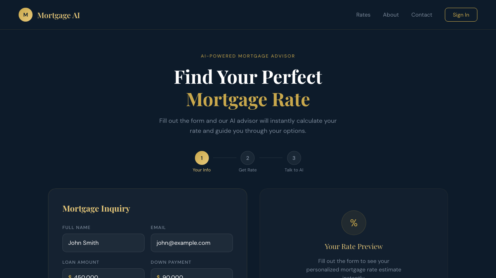

Overview
I built Mortgage AI to explore one question: can you make a complex financial process feel like a natural conversation? Mortgage inquiries are usually slow — you fill out a form, wait for a callback, and end up on hold. I wanted to collapse that entire experience into a single session where the AI already knows your numbers before you say a word.
This was also my first time working with Vapi, a voice AI platform. I went in knowing nothing about voice agents and used this project to learn from scratch — how to configure agents, how to pass data into a live call, how to design multi-agent handoffs, and how to trigger outbound phone calls from a server.

What I built
The app has three stages that flow into each other:
- Mortgage form — user enters loan amount, down payment, loan type, credit score, and contact details.
- Instant rate estimate — the Node.js backend calculates a personalised rate and monthly payment based on the inputs and returns it immediately.
- Voice session — a Vapi voice agent opens in the browser, greets the user by name, and already knows their rate and loan details. The user can ask questions, run "what if" scenarios mid-call, or get transferred to a mortgage education agent for concept questions (LTV, PMI, APR, etc.). When the call ends, a follow-up card appears — the user enters their phone number and a third agent calls them back within seconds, and can book a real 30-minute appointment via Google Calendar.
Stack: React, Node.js / Express, Vapi, Tailwind CSS, Vercel. No database needed — Vapi stores transcripts automatically.
How it works
1. Personalising the agent with variable injection
When the user submits the form, the frontend gets the calculated rate from the backend, then immediately starts a Vapi call and passes all the user’s data as variables:
vapi.start(squadId, {
assistantOverrides: {
variableValues: {
name: "Sarah",
rateSpoken: "six point five percent",
monthlyPaymentSpoken: "two thousand two hundred dollars",
loanAmountSpoken: "four hundred thousand dollars",
// ...
}
}
})
The agent’s first message uses those variables directly — {{name}}, {{rateSpoken}} — so the very first thing the user hears is their own name and their own rate. No generic welcome.
2. Three agents, each with one job
Rather than one agent doing everything, I split responsibilities across three focused agents:
- Rate Inquiry Agent — handles the web voice session. Knows the user’s loan details, answers rate questions, runs "what if" scenarios.
- Educational Agent — explains mortgage concepts (LTV, APR, PMI, amortization). Has access to a knowledge base and always searches it before answering.
- Follow-up Agent — makes an outbound phone call after the session. Can check Google Calendar and book a 30-minute appointment during the call.
3. Routing between agents with Vapi Squads
Instead of building routing logic manually, I used Vapi Squads — a Squad groups agents and defines when to hand off between them. The rules are simple:
- User asks a concept question ("what is LTV?") → transfer to Educational Agent
- Educational Agent finishes → offer to transfer back to Rate Inquiry Agent
One config option made a big difference: contextEngineeringPlan: "full". This passes the full conversation history to the receiving agent on every transfer, so the user never has to repeat themselves and the handoff feels seamless.
4. Triggering the outbound follow-up call
The follow-up call works differently from the web voice session — it’s triggered server-side. When the user submits their phone number, the frontend hits POST /api/start-call on the Express backend, which calls the Vapi REST API with an assistantId, a phoneNumberId, and the customer’s number. The Follow-up Agent calls them within a few seconds, pre-loaded with their data, ready to book an appointment.
Challenges and debugging
Numbers sounded wrong. The first time I heard the agent say "four five zero zero zero zero" instead of "four hundred fifty thousand dollars," I realised voice AI and text AI are not the same thing. Raw numbers are unpredictable when spoken aloud. The fix was to pre-convert every number into a spelled-out string on the frontend before the call starts, and keep the raw numbers separately for tool calculations only. Once I made that distinction — spoken values for the agent’s voice, raw values for logic — the audio became consistent and natural.
One agent trying to do too much. My first version used a single agent with a long system prompt that tried to handle both rate questions and mortgage education. It worked, but the responses were inconsistent — sometimes the agent went too deep on concepts when the user just wanted a number, and vice versa. Splitting into two focused agents (one for rates, one for education) immediately improved response quality. Specialised agents with narrow scopes behave more predictably than generalist ones with long prompts.
Handoff context getting lost. Early on, transfers between agents felt awkward — the educational agent would re-introduce itself even though the user had been talking for a few minutes. Adding contextEngineeringPlan: "full" to the Squad config solved it. The receiving agent gets the full transcript, so it knows who it’s talking to and what was already covered.
Web calls vs phone calls. I assumed triggering a phone call would work the same way as starting a web call. It doesn’t. Web calls are initiated client-side via the Vapi SDK. Phone calls are initiated server-side via a REST API call with a phoneNumberId. Understanding that distinction unblocked the outbound follow-up feature.
What I learned
Voice prompts are a different skill. Chat prompts can be long and detailed. Voice agent prompts need to produce short, spoken sentences — the user is listening, not reading. I started thinking about every response in terms of how long it would take to say out loud, and writing instructions like "keep answers under three sentences" directly into the system prompt.
Personalisation makes or breaks voice AI. A generic greeting feels like an IVR menu. An agent that opens with your name and your exact rate feels like it’s actually paying attention. The technical lift for variable injection is small — the experience difference is huge.
Narrow agents outperform broad ones. The more I tried to consolidate logic into fewer agents, the worse the quality got. Giving each agent a single, clear job — and letting the Squad handle routing — produced better, more consistent conversations.
Vapi is genuinely powerful once you understand its model. Assistants, Squads, tools, outbound calls, variable injection, knowledge bases — there’s a lot of surface area. But once the mental model clicked (assistants are the agents, squads handle routing, tools are function calls, variables personalise the session), building became fast. The hardest part was the learning curve at the start, not the implementation.